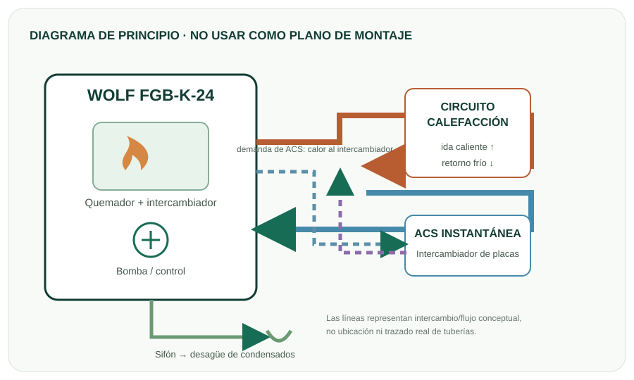
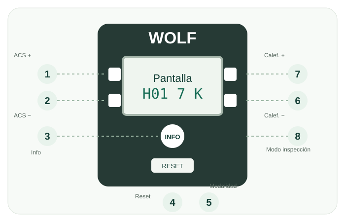
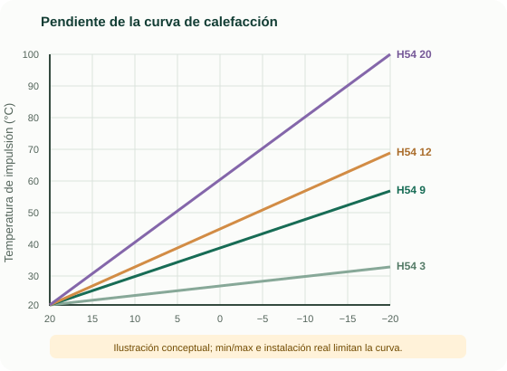

Recorrido
Del control previo al acta
Avanza por los controles de agua, llenado, evacuación de condensados, gas, combustión y entrega. Marca lo revisado y registra valores con unidad y referencia.
Material de aprendizaje basado en el manual
Puesta en marcha, regulación y navegación del menú HG explicadas paso a paso.

Recorrido
Avanza por los controles de agua, llenado, evacuación de condensados, gas, combustión y entrega. Marca lo revisado y registra valores con unidad y referencia.
Regulación
Busca por código, filtra por gas y consulta valor de fábrica y límites de la tabla para 24 kW. Se señalan condiciones de visibilidad, BM-2 y versión de firmware.
Orientación
Aprende qué teclas abre cada menú, cómo leer el diagrama funcional y qué representa la curva climática.
Fuente primaria: WOLF, Instrucciones de servicio para el instalador: FGB / FGB-K, código 3066484_202209. Referencias de página incluidas en cada tema. La foto enlaza al sitio oficial de WOLF. Ficha oficial de la gama FGB(-K).
Recorrido guiado · ocho etapas
Sigue el orden del fabricante. Para cada etapa, revisa el propósito, registra el dato solicitado y valida con tu tutor.
Los valores de presión, gas y combustión dependen de la categoría que figure en la placa, del combustible y de la instalación. La app muestra las tablas del manual para consulta; solo un instalador autorizado realiza mediciones, ajustes o conversiones de gas.
El responsable debe revisar los resultados, cerrar y firmar el acta de puesta en marcha y entregar la documentación al operador.
Consulta · capítulo 16 del manual
Valores de fábrica y límites indicados en la tabla del modelo de 24 kW. Úsalos como referencia documental; no como recomendación para cambiar la configuración.
El manual reserva la modificación a un instalador autorizado o servicio posventa WOLF. Los parámetros H02–H04 cambian automáticamente al modificar H12. Los parámetros H12, H40 y H51 deben comprobarse durante la puesta en marcha.
Los valores de fábrica son columnas separadas por potencia y combustible. Para FGB-K-24 usa solo la columna de 24 kW que corresponda al combustible confirmado en la placa y a la versión de firmware. Un guion indica que la tabla no da un valor seleccionable en esa columna. Los límites mínimo/máximo son el rango de parámetro publicado, no un objetivo de ajuste.
La nota del manual indica que el tipo de gas/clase de potencia de 24 kW (natural/GLP) requiere versión FW 4.30 para selección mediante H12. Comprueba la versión en el equipo y sigue el procedimiento específico de conversión.
Referencia: manual WOLF 3066484_202209, capítulo 16, páginas impresas 34–35; capítulo 17, páginas 36–44.
Lectura visual · no es un plano de instalación
Ilustraciones didácticas originales para explicar el funcionamiento y el panel. Para cableado, montaje, puntos de medición y despiece, consulta las figuras del manual completo.
Esquema funcional conceptual. En modo calefacción, el intercambiador entrega calor al circuito; al demandar ACS, el intercambiador de placas transfiere calor al agua sanitaria.

Ilustración propia a partir de la descripción de componentes del manual, p. 11.La numeración corresponde a la figura de mandos del manual. Si hay una BM-2, algunas teclas quedan desactivadas porque la BM-2 ejecuta esas funciones.

Manual, capítulo 15, p. 29–32.Navegación de estudio
tS.tS. El primer parámetro es H01.La pendiente relaciona la temperatura exterior con la impulsión. El manual propone como reglas orientativas 9 para radiadores y 3 para suelo radiante con buen aislamiento; en aislamiento moderado, 12 y 6 respectivamente. Un instalador adapta cada circuito al edificio y zona climática.

La gráfica ilustra la tendencia, no calcula consignas de diseño. Manual, capítulo 17, p. 42–43.El apartado de análisis distingue mediciones con aparato abierto (ajuste) y cerrado (medición final). No compares lecturas tomadas en condiciones distintas.
| Condición | Gas | CO₂ % | O₂ % |
|---|---|---|---|
| Abierto · máx. | Natural E/H/LL | 9,1 ± 0,2 | 4,5 ± 0,3 |
| Abierto · máx. | GLP P | 10,2 ± 0,2 | 5,4 ± 0,3 |
| Abierto · mín. | Natural E/H/LL | 8,9 ± 0,2 | 5,0 ± 0,3 |
| Abierto · mín. | GLP P | 9,8 ± 0,2 | 6,0 ± 0,3 |
| Cerrado · máx. | Natural E/H/LL | 9,3 ± 0,2 | 4,2 ± 0,3 |
| Cerrado · máx. | GLP P | 10,5 ± 0,2 | 4,9 ± 0,3 |
| Cerrado · mín. | Natural E/H/LL | 9,1 ± 0,2 | 4,7 ± 0,3 |
| Cerrado · mín. | GLP P | 10,0 ± 0,2 | 5,7 ± 0,3 |
La tabla muestra varias categorías de aparato para España. Lee primero la categoría de la placa; la app no elige por ti.
| Fila/categoría de aparato | Combustible | Nominal (mbar) | Mín. (mbar) | Máx. (mbar) |
|---|---|---|---|---|
| ES · II₂ELL₃P | Gas natural | 20 | 18 | 25 |
| ES · II₂ELL₃P | GLP | 50 | 42,5 | 57,5 |
| Incluye ES · II₂H₃P | Gas natural | 20 | 18 | 25 |
| Incluye ES · II₂H₃P | GLP | 37 | 25 | 45 |
| Incluye ES · II₂H₃P (otra fila multi-país) | Gas natural | 20 | 18 | 25 |
| Incluye ES · II₂H₃P (otra fila multi-país) | GLP | 50 | 42,5 | 57,5 |
Presión de servicio para llenar: aproximadamente 1,2–1,6 bar (manual, p. 47–50; confirmar instalación).
Prueba hidráulica antes de puesta en marcha: sección 18 especifica máximo 4 bar en calefacción y cerrar llaves de paso hacia el equipo antes de la prueba; el manual señala que el equipo sale probado de fábrica a 4,5 bar. Página 21 distingue agua potable máx. 10 bar y calefacción máx. 4,5 bar para esa comprobación. Respeta el escenario de prueba indicado por el fabricante.
Agua de calefacción: acondicionamiento según VDI 2035; no usar anticongelantes ni inhibidores. En instalaciones mixtas el manual indica pH 8,2–9,0. Agua pobre en sales con conductividad <100 μS/cm reduce el riesgo de corrosión.
Sifón: llenar desde arriba a través del tubo de gases de combustión; nunca echar agua por la toma de aire. Evitar burbujas, no enrollar la manguera de condensados y dar pendiente aproximada de 5°.
Los esquemas son ilustraciones propias de carácter explicativo. La foto oficial enlazada pertenece a WOLF. Consultar documentación técnica oficial de WOLF y el manual completo antes de cualquier trabajo real.